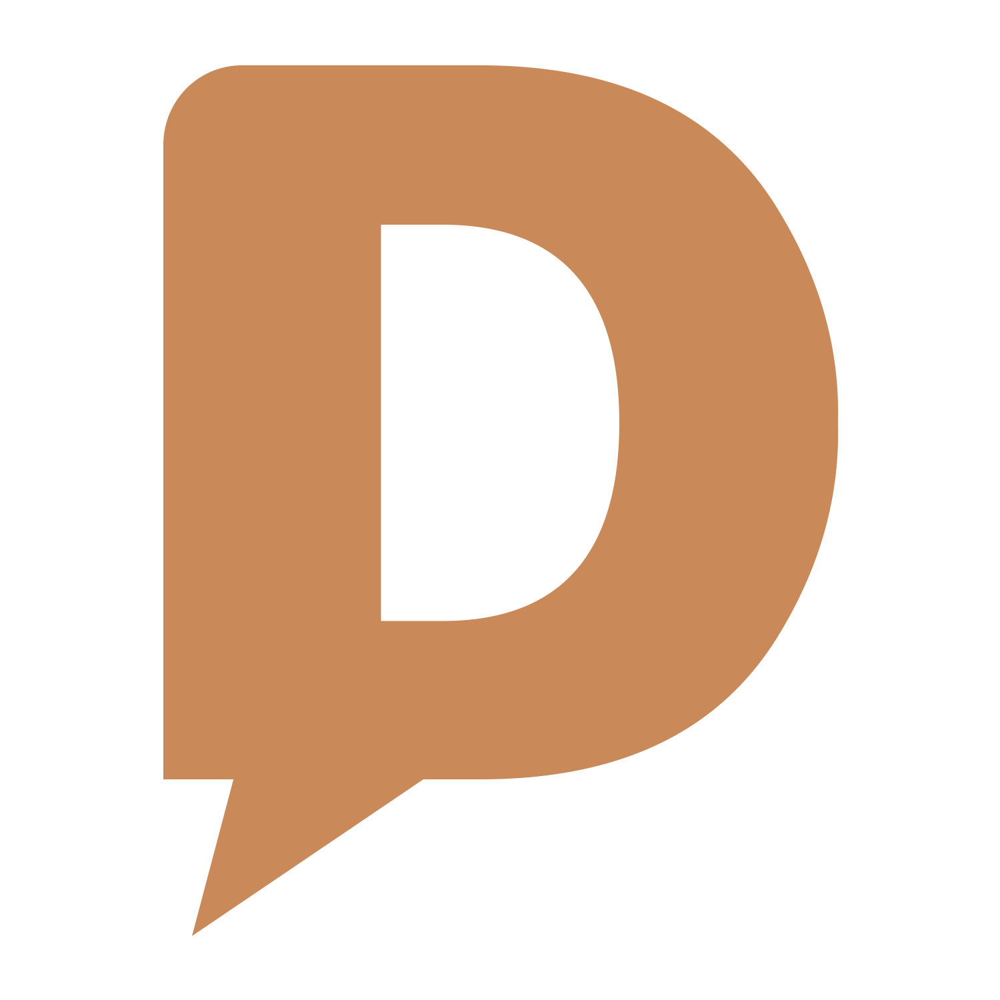

<ion-tabs>

  <ion-tab-bar color="new" slot="bottom">
    <ion-tab-button tab="tab3">
      <ion-icon name="list"></ion-icon>
    </ion-tab-button>

    <ion-tab-button (click)="changeTheme()">
      
    </ion-tab-button>


    <ion-tab-button tab="tab1">
      <ion-icon name="alert"></ion-icon>
    </ion-tab-button>
  </ion-tab-bar>

</ion-tabs>
